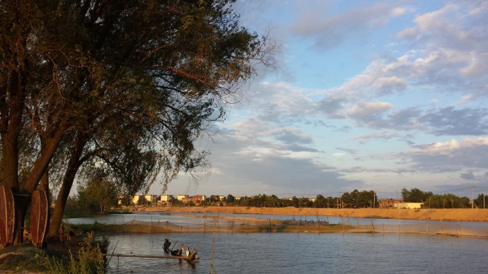
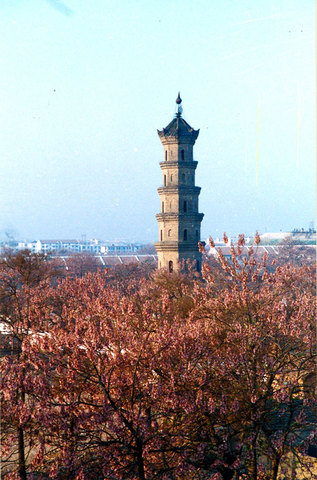

景点名片
郑店子风景区
郑店子位于亳州市城市西北角郑店子 是涡河和洪河的交汇处，两河与西一环路一起围合的三角地带。三角洲占地面积约50万平方米，三角洲旅游区控制范围约210公顷(2.1平方公里) 。处于城市结构“一带六区”的涡河文化旅游带的端头上，又是城市北入口的景观节点。在亳州市2012政府工作报告中正式将郑店子中华药都养生园建设列为亳州市2012年十大重点工程。
规划总建筑量约6万平方米，规划整体结构为"一带两区"。项目将建成为AAAA级景区，总占地约850亩，水面1000亩。具备会展中心、商业功能区，水上娱乐区等。接待区、药览园、密林深处、现代农业观光园、登高揽胜处、野生动物园、儿童乐园、民俗园区、水上乐园、休闲运动区、河滩及防护林地附属工程及配套建设园区道路网、变配电系统、假山、喷泉、绿化等设施。
滨河休闲及景观带：以健康、休闲、活力为主题，通过呼应两岸城市、主题分区等手法，打造融多元文化、秀美水岸、自然野趣、活力共享于一体的城市滨河绿带。形成城市休闲体验、百草主题观赏、道家文化、养生文化、浪漫花境体验，湿地生境体验六大主题片区。通过布置人工沙滩、游船码头、亲水步道、儿童广场、草药花田，将市民休闲和城市文化有机融合。
温泉酒店区：亳州作为全国文明的中药种植基地，已形成了全国最大的中药材集散地，城市的医药特色为本项目带来了大量而稳定的商务接待客源，伴随医药论坛和中药博览会规模和影响的扩大，也为高端会议接待创造了可能性。依托医药交易、特色论坛为基础，发挥基地内的温泉资源，以完善整体旅游配套为目标，沿105国道形成以会议酒店、温泉休闲为主的综合服务片区。其中，精品酒店以提供旅游接待、会议论坛等功能为主。独立客房则为高端接待、企业培训及活动提供场所。温泉整体突出本土医药特色，形成多元主题，打造整体片区的亮点。
养生主题园：在温泉酒店区东侧，以老子道家文化--静以养心、华佗医药文化--动以养身为主题，打造两条旅游流线。结合道家文化，通过运用当地花卉、设置花圃、林间茶社、规划养心步道，以静态活动为主，从而营造"静以养心"的文化氛围。结合华佗文化，通过设置百草园、国医林、百草农舍、儿童认知林，结合养身步道、雕塑、体验场所、药膳美食，从全方位感受、认知医药文化。
薛阁塔
在亳州老城东南，是一座砖塔。直椎式八角开，共七层，高34.15米，周圆23.36米。塔座由八块青石奠基。塔一二层为仿木结构，每角砌砖为方柱，高3.5米。柱上仿高50公分。仿上为塔檐、上并饰以斗拱、昆虫、鸟卉花纹，登塔门面向东北，有螺旋式台阶，塔室为一个面南的小龛，可能是供俸神象用的，现空无一物。各层塔檐造型与一二层基本相同。塔之上顶八角飞檐，挑角垂脊，铺有筒瓦滴水檐形如八角古亭。塔尖端为铁铸莲座，座上有螺旋铁柱支撑。一个铁葫芦直插云霄。
薛阁塔，原名文峰塔。清乾隆中叶，知州郑交泰因此地文风不正，于城东南一里筑此塔，以倡文风。原五层，后绅士何天衢捐资复建二层，成为七级浮屠。明朝武宗时候，亳州名人薛蕙，字君米，号西原先生。正德九年（公元1514年）举进士。授刑部主事，历考功司郎中。薛蕙曾建家于此，名叫薛阁塔。薛蕙的嗣孙薛凤翔，明崇祯年间，官鸿胪寺少卿，能诗善书，著有《牡丹史》四卷，为我国古代研究牡丹的专著，薛氏名噪一时，又因塔紧靠薛家阁，故后人多称文峰塔为薛阁塔。之后，薛氏家庙荒废，清嘉庆三年（公元1798年），亳州都司李铭，在薛阁原址之上堆土为山，重建成庙宇累级登山，曲室迥廊，危楼静宇，改名为观音山。时称古亳之胜，薛阁塔，也更为游人所慕。
明王台遗址
等级：安徽省重点文物保护单位
明王台遗址位于亳州市谯城区大有街花井崖北侧通真观内。是元末农民起义领袖小明王韩林儿称帝即位的宫殿遗址，故名明王台。该遗址于1981年9月公布为省级重点文物保护单位。1355年（至正15年）二月，刘福通自砀山夹河迎韩林儿到亳州，拥立为“小明王”，尊其母杨氏为皇太后，建国号为“宋”，建元“龙凤”，定亳州为“国都”。起义军拆亳州太清宫建筑材料修建大宋政权宫阙，在北关“通真观”建立宫殿、朝房，登基。清光绪《亳州志·兵事》载：“至正十五年二月，颍州刘福通自砀山夹河迎韩林儿至，称皇帝，号‘小明王’，都亳州，国号曰‘宋’，改元‘龙凤’。拆太清宫材治宫阙。十二月围亳州，福通以韩林儿走安丰。”后，宫阙毁坏，但台基仍存。现存明王台，北、西两面临哑吧坑，地势高峻，高台俨然，面积180平方米。
北关历史街区
又称北关老街。亳州物华天宝，春秋时即为邻邦物产重要交流之地，唐宋时为贸易的据点，明清已达鼎盛，成为区域经济中心。光绪年间，亳州有大小街道146条，其中北关商业区街道57条，大多以行业命名，一街一市，如：花子街、白布大街、牛市、驴市等。这里汇聚了全国10多个省和地区的33家商业会馆，其中湖广会馆、河南会馆、山陕会馆（花戏楼）、江宁会馆等规模最大，功能也较齐全。到清末民初，这一区域有大小钱庄33家，各类商店、栈、号、行、庄近千家，成了名副其实的 "小南京"。现在的亳州老街主要指北门口以北，涡河以南的老街区。保存古街近20条，街貌依旧，建筑典雅，是研究明清中原商贸文化不可多得的实物资料。